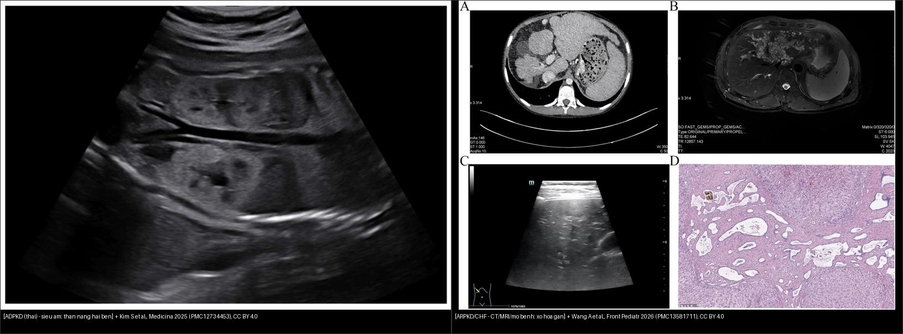
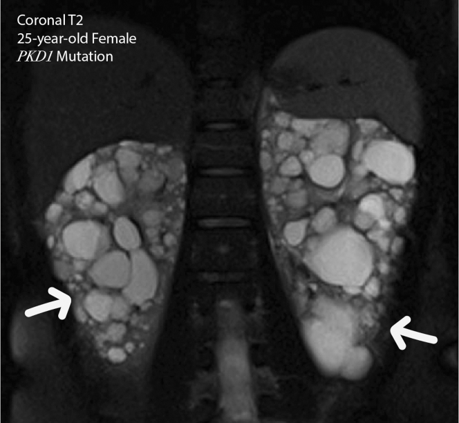
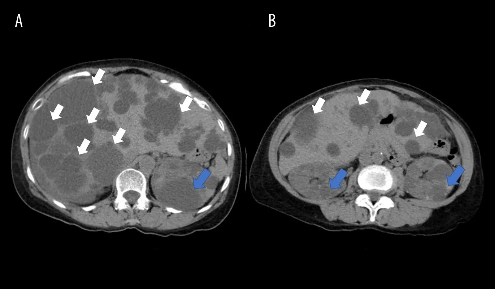
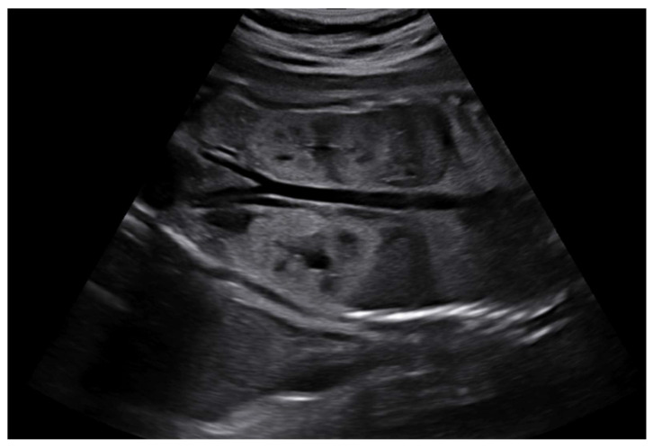
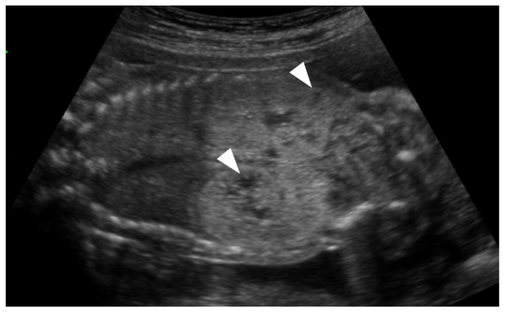
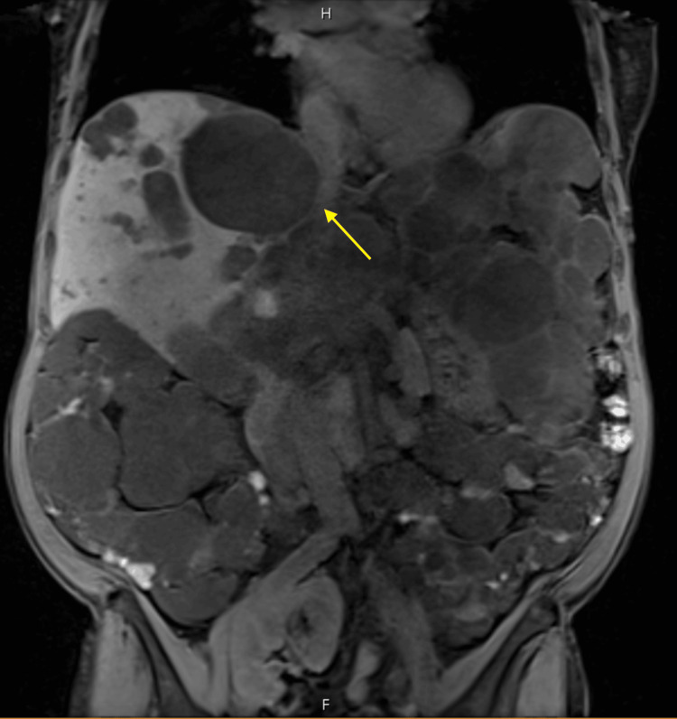
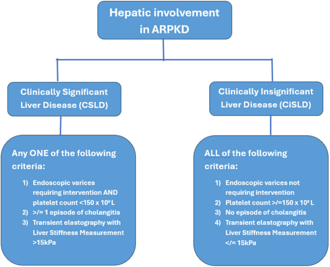

157 — Bệnh thận đa nang ADPKD/ARPKD & gan đa nang / ADPKD–ARPKD & polycystic liver disease
Tags: pattern:than-da-nang vung:than vung:gan score:Mayo-MIC protocol:sang-loc-than-da-nang incidentaloma:nang-gan-than
Mức chắc chắn (certainty): tổng hợp y văn (literature synthesis) — nhóm tự biên từ y văn mở (Kidney Int Rep 2025, Am J Case Rep 2026, Medicina 2025, Front Pediatr 2026, JPGN Rep 2026, Cureus 2026), số liệu đối chiếu guideline KDIGO 2025 + Pei 2009 + Irazabal 2015.
1. Tổng quan — vì sao nang mọc, và TẠI SAO đọc được trên CT/MRI
- Bệnh thận đa nang trội NST thường (autosomal dominant polycystic kidney disease — ADPKD) là bệnh thận đơn gen hay gặp nhất, khoảng 1/1.000–1/2.500 người lớn; PKD1 (~78%) nặng hơn PKD2; ~50% tiến triển tới suy thận giai đoạn cuối (ESKD) trước tuổi 60, và ADPKD chiếm ~5–10% tổng số ESKD ở người lớn (PMC13587221).
- Cơ chế sinh nang (để nhớ TẠI SAO hình ảnh như vậy): đột biến PKD1/PKD2 → mất phức hợp polycystin-1/2 ở lông mao (± polycystin) → ống thận tăng sinh biểu mô + tăng tiết dịch + giãn ra thành nang chứa dịch lọc. Nang xuất phát từ mọi đoạn ống → phân bố vỏ lẫn tủy, hai bên, lan tỏa. Riêng ARPKD (lặn) do PKHD1 → vi nang (microcyst) toàn bộ ống góp → thận to nhưng không nang lớn.
- TẠI SAO tín hiệu (vật lý):
- Nang chứa dịch trong (simple fluid) → CT 0–15 HU (nước), MRI T1 thấp + T2 rất cao.
- Nang xuất huyết (hay gặp trong ADPKD) → T1 cao (methemoglobin) + T2 biến thiên, thường có mức dịch–dịch (không phải mỡ → không mất tín hiệu khi fat-sat).
- Nang nhiễm trùng → thành dày + ngấm + viêm mỡ quanh nang + khí trong nang, hạn chế khuếch tán; có thể "mờ" không phân biệt được với máu về đậm độ đơn thuần → phải đối chiếu lâm sàng + phim cũ (CRP, sốt).
- Gan đa nang (polycystic liver disease — PLD) gần như luôn đi kèm ADPKD (nang gan nặng hơn ở nữ); biến chứng cơ học khi nang chèn rốn gan/mạch máu (PMC13412458).
- ARPKD/CHF (lặn): ngoài thận to tăng âm còn có xơ hóa gan bẩm sinh (congenital hepatic fibrosis — CHF) → xơ quanh ống mật → tăng áp lực cửa, lách to, giãn tĩnh mạch thực quản. Dịch tễ CHF ~1/10.000–1/20.000, nguy cơ tái phát cho con 25% (PMC13581711).
2. Mẫu hình + chẩn đoán phân biệt theo vị trí (gamut)
- Thận hai bên nhiều nang + thận TO → ADPKD (nang lớn rõ, vỏ+tủy), ARPKD (trẻ nhỏ, vi nang tăng âm, mất phân biệt vỏ–tủy), TSC (kèm AML chứa mỡ), VHL (kèm u đặc ngấm + nang tụy), HNF1B (thận nhỏ, ít nang, kèm đái tháo đường/giãn đường mật), nephronophthisis (thận bình thường/nhỏ, nang tủy, CKD trẻ).
- Thận hai bên nhiều nang + thận NHỎ/BÌNH THƯỜNG ở người lọc máu → ACKD (bệnh thận nang mắc phải; nguy cơ RCC thật — khác ADPKD).
- Nang gan nhiều ổ → PLD/ADPLD (kèm ADPKD; ≥ 10 nang), bệnh Caroli (giãn đường mật thông cây mật + central dot), u mô đệm đường mật von Meyenburg (nốt < 1,5 cm, T2 "trời sao", không thông mật), xơ hóa gan bẩm sinh/CHF (không phải nang lớn, mà giãn đường mật + xơ + tăng áp lực cửa).
- Bất thường phối hợp phải soát khi thấy thận đa nang: phình mạch não (12,9% ở ADPKD vs 2,9% dân số chung), nang tụy/lách, phình/tách ĐMC, thoát vị thành bụng, bệnh túi thừa đại tràng, sỏi thận (~20%).
- Gợi nhớ "CYST–LIVER–BRAIN": Cyst (nang lớn hai bên) · Young/adult PKD1 nặng hơn PKD2 · Stones + Tạng (gan/tụy) · LIVER (PLD, nặng ở nữ) · BRAIN (phình mạch não, tầm soát có mục tiêu).
3. Bảng so sánh phân biệt (ma trận đối chiếu)
| Thực thể (entity) | Hình ảnh điển hình | Chốt vào (rule-in) | Chốt loại (rule-out) | Gợi ý xác nhận |
|---|---|---|---|---|
| ADPKD | Thận TO hai bên, nang lớn lan tỏa vỏ+tủy; nang gan/tụy; ± phình mạch não | ≥ 3 nang (15–39t) / ≥ 2 nang mỗi thận (40–59t) / ≥ 4 nang mỗi thận (≥ 60t) khi có tiền sử gia đình (siêu âm); ≥ 10 nang (MRI 16–40t) | Ở người 40–59t, < 2 nang tổng cộng → LOẠI trừ (NPV 100%); thận nhỏ + lọc máu → ACKD | Siêu âm → MRI/CT; htTKV + MIC; gene PKD1/PKD2 |
| ARPKD / CHF | Trẻ nhỏ: thận to, tăng âm lan tỏa, vi nang, mất phân biệt vỏ–tủy; gan: giãn đường mật + xơ + tăng áp lực cửa | Thận to tăng âm ở sơ sinh/nhũ nhi + gan xơ/tăng áp lực cửa | Nang lớn rõ ở người lớn + nang gan → ADPKD | Gene PKHD1; siêu âm thai; phân độ gan CSLD/CiSLD |
| ACKD | Thận nhỏ/bình thường (~81–85 mm), nhiều nang, ở người lọc máu/ESKD | ≥ 3 nang/thận + thận nhỏ + đang lọc máu | Thận khổng lồ + nang gan → ADPKD | Xem bài 153; nguy cơ RCC thật (×100) |
| TSC | Nang thận + AML chứa mỡ (−10 đến −100 HU); u sừng trán, u dưới màng não thất; LAM | Mỡ đại thể trong khối thận + tổn thương TKTW | Nang thuần không có thành phần mỡ | Xem bài 156; gene TSC1/TSC2 |
| VHL | Nang thận + u đặc ngấm mạnh (RCC), nang tụy, u mạch máu võng mạc/TKTW, pheo | Nang + u đặc ngấm ở người trẻ, đa tạng | Chỉ có nang không đặc → ADPKD/đơn thuần | Xem bài 156; gene VHL |
| Gan đa nang (PLD) / von Meyenburg / Caroli | PLD: nang gan lớn nhiều ổ; von Meyenburg: nốt < 1,5 cm T2 "trời sao", không thông mật; Caroli: giãn đường mật thông cây + central dot | PLD: ≥ 10 nang gan + nang thận (ADPKD) | Nang gan đơn thuần vài ổ, không nang thận | MRI/MRCP; xem bài 123 |

Trái: ADPKD thai — thận hai bên nhiều nang lớn (trội). Phải: ARPKD/CHF — hình ảnh xơ hóa gan bẩm sinh (giãn đường mật + xơ quanh ống mật, tăng áp lực cửa). Nguồn: Kim S et al., Medicina 2025 (PMC12734453) + Wang A et al., Front Pediatr 2026 (PMC13581711), CC BY 4.0. Ảnh ghép letterbox.4. Protocol + phân độ Mayo (MIC) + hướng xử trí
- Siêu âm là tuyến đầu sàng lọc người lớn có nguy cơ (KDIGO 2025); MRI/CT khi siêu âm chưa rõ hoặc để đo thể tích.
- Tiêu chuẩn siêu âm thống nhất (Pei 2009) khi có tiền sử gia đình:
- 15–29 tuổi: ≥ 3 nang (một/b hai thận) để chẩn đoán (PPV 100%); < 1 nang để loại trừ (NPV 91%).
- 30–39 tuổi: ≥ 3 nang (PPV 100%); < 1 nang → loại trừ (NPV 98%).
- 40–59 tuổi: ≥ 2 nang MỖI thận (PPV 100%); < 2 nang tổng cộng → loại trừ (NPV 100%).
- ≥ 60 tuổi: ≥ 4 nang mỗi thận để chẩn đoán.
- MRI (16–40 tuổi): ≥ 10 nang (tổng hai thận) = chẩn đoán; < 5 nang = loại trừ (độ đặc hiệu ~98–100%).
- Thể tích thận (TKV) & htTKV + Phân độ Mayo (MIC, Irazabal 2015):
- htTKV = (TKV hai thận) / chiều cao (m), đơn vị mL/m. Đo tốt nhất bằng phân đoạn (segmentation) MRI/CT; công thức ellipsoid (π/6 × D × R × C) nhanh nhưng kém chính xác (siêu âm thấp hơn ~11%, xếp nhầm độ ~22%).
- MIC class 1 (điển hình, hai bên lan tỏa) chia 1A–1E theo htTKV + tuổi (tương ứng tốc độ tăng htTKV/năm và tuổi suy thận):
| Phân độ | Tốc độ tăng htTKV/năm | Tuổi suy thận (Kaplan–Meier) | Ý nghĩa |
|---|---|---|---|
| 1A | < 1,5% | < 20% tới suy thận | tiến triển chậm |
| 1B | 1,5–3,0% | 71,2 tuổi | chậm |
| 1C | 3,0–4,5% | 62,8 tuổi | tiến triển nhanh (cân nhắc tolvaptan) |
| 1D | 4,5–6,0% | 55,6 tuổi | tiến triển nhanh |
| 1E | > 6,0% | 45,1 tuổi | tiến triển nhanh |
- Class 2 (không điển hình) gồm 2A (một bên/khu trú/lệch) và 2B (teo, chiều dài thận trung bình < 14,5 cm): KHÔNG dùng MIC vì thể tích không dự báo được diễn tiến.
- Tiêu chuẩn điều trị (KDIGO 2025): tolvaptan cho người lớn eGFR ≥ 25 mL/phút/1,73 m² VÀ có tiến triển nhanh (Mayo 1C–1E, hoặc giảm eGFR ≥ 3 mL/phút/năm, hoặc điểm PROPKD > 6). Không dùng mTOR/statins/metformin/somatostatin để làm chậm tiến triển thận; somatostatin chỉ để giảm thể tích gan trong gan đa nang có triệu chứng.
- Tầm soát phình mạch não: KHÔNG tầm soát đại trà — chỉ khi có tiền sử bản thân/gia đình phình mạch não, xuất huyết dưới nhện, hoặc đột tử không giải thích. Phương pháp: MRA TOF không gadolinium (bảo vệ thận). Phình ≤ 5 mm vòng tuần hoàn trước thường theo dõi, không can thiệp.
flowchart TD
A[Than hai ben nhieu nang] --> B{Co tien su gia dinh ADPKD?}
B -->|Co| C[Ap tieu chuan dem nang theo tuoi - Pei 2009]
B -->|Khong| D[Soat mimic: TSC, VHL, HNF1B, ACKD, MSD]
C --> E{Hinh thai dien hinh? many nang hai ben doi xung}
E -->|Khong - lech/teo| F[Class 2: KHONG dung MIC]
E -->|Co| G[Do TKV bang MRI/CT + tinh htTKV]
G --> H[Dat vao bang Mayo: 1A-1E]
H --> I{1C-1E hoac eGFR giam >=3 mL/phut/nam?}
I -->|Co| J[eGFR >=25: can nhac TOLVAPTAN]
I -->|Khong| K[Theo doi 3-5 nam/lan; nuoc >=2 L/ngay]
A --> L{Tien su phinh mach nao / SAH?}
L -->|Co| M[MRA TOF khong gadolinium]
A --> N{Gan to/nang gan nhieu + trieu chung?}
N -->|Co| O[Do the tich gan; somatostatin neu trieu chung nang]
5. Biến thể bình thường và cạm bẫy
- Nang xuất huyết vs nang nhiễm trùng — KHÔNG có một dấu hiệu đơn độc nào đủ: xuất huyết = tăng đậm độ trên CT không cản quang, T1 cao, mức dịch–dịch, mỡ quanh sạch, thoái triển theo tuần; nhiễm trùng = thành dày/ngấm, viêm mỡ quanh nang, khí trong nang, hạn chế khuếch tán, nang MỚI so với phim trước. Nghi nhiễm trùng nang → ¹⁸F-FDG PET/CT khi cần xác nhận; điều trị kháng sinh ngấm mỡ 4–6 tuần (fluoroquinolone/TMP-SMX), không dựa vào đậm độ đơn thuần.
- ADPKD vs ACKD — chốt ở KÍCH THƯỚC thận: ADPKD = thận khổng lồ; ACKD = thận nhỏ/bình thường ở người lọc máu (xem bài 153).
- RCC trong ADPKD: KDIGO 2025 nêu ADPKD KHÔNG làm tăng rõ nguy cơ RCC → không tầm soát ung thư vì riêng chẩn đoán ADPKD; nhưng nếu có thành phần đặc/ngấm trên nền hàng trăm nang thì rất dễ bỏ sót → luôn nhìn "phần ngấm", so phim cũ. (ACKD thì có tăng nguy cơ thật.)
- Không cần gadolinium để đo TKV — quan trọng ở người suy thận (tránh nguy cơ xơ hóa thận–hệ thống).
- Gan đa nang chèn ép có thể gây tắc mật/hẹp tĩnh mạch/huyết khối (Ca MRCP) — đừng chỉ mô tả "nhiều nang", hãy tìm biến chứng cơ học.
- Trẻ em: 1 nang ở trẻ < 15 tuổi có tiền sử gia đình là rất đáng ngờ, nhưng siêu âm bình thường không loại trừ; không tầm soát đại trà phình mạch não/nang tạng ở trẻ (KDIGO).
- Sỏi thận ~20% trong ADPKD; cần phân biệt sỏi với vôi hóa thành nang.
6. Tự lượng giá — Blind Quiz
Ca 1 — Nữ 25 tuổi, đột biến PKD1, MRI T2 coronal bụng:

- Hỏi: Hai thận thế nào? Vì sao T2 rất sáng? Cần báo cáo thêm gì để quyết định điều trị?
Bấm để hiện đáp án (findings + chẩn đoán)
- Findings: hai thận to, nang lan tỏa hai bên (nang chứa dịch → T2 rất cao), hình thái điển hình (class 1). Chẩn đoán: ADPKD. Phải báo cáo thêm: TKV/htTKV + phân độ Mayo (1A–1E) — vì phân độ quyết định có chỉ định tolvaptan (1C–1E + eGFR ≥ 25). Nguồn: Hu Z et al., Kidney Int Rep 2025, gr2, PMC12446943, CC BY-NC-ND 4.0.
Ca 2 — Bệnh nhân ADPKD, CT bụng cản quang: nang ở gan và thận:

- Hỏi: Nang nào ở gan, nang nào ở thận? Điều gì gợi ý "gan đa nang (PLD)"?
Bấm để hiện đáp án (findings + chẩn đoán)
- Findings: nhiều nang gan giảm đậm độ (mũi tên trắng) + nang thận hai bên (mũi tên xanh). Chẩn đoán: ADPKD kèm gan đa nang (PLD) — chốt ≥ 10 nang gan + nang thận; nang gan nặng hơn ở nữ. Nguồn: Zaulkafali TA et al., Am J Case Rep 2026, Fig 2, PMC13505321, CC BY-NC-ND 4.0.
Ca 3 — Thai nhi (song thai), siêu âm 24 tuần: hai thận của một thai có hình dạng bất thường.

- Hỏi: Mô tả thận? Nghĩ ADPKD hay ARPKD? Vì sao phải đánh giá gan sau sinh?
Bấm để hiện đáp án (findings + chẩn đoán)
- Findings: thận hai bên to, nhiều nang lớn vỏ + tủy (ADPKD thai). Chẩn đoán: ADPKD — khác ARPKD (thận tăng âm lan tỏa, vi nang, mất phân biệt vỏ–tủy, thường hai bên đối xứng + ối ít). Sau sinh phải theo dõi huyết áp, chức năng thận + gan (CHF/tăng áp lực cửa). Nguồn: Kim S et al., Medicina 2025, Fig 2, PMC12734453, CC BY 4.0.
Ca 4 — Thai nhi có thận to tăng âm, gần mất phân biệt vỏ–tủy. Siêu âm:

- Hỏi: Mẫu hình này gợi bệnh gì? Phân biệt với nang lớn (ADPKD) thế nào?
Bấm để hiện đáp án (findings + chẩn đoán)
- Findings: thận to, tăng âm lan tỏa, gần mất ranh giới vỏ–tủy (mũi tên trắng). Chẩn đoán: hướng ARPKD/ciliopathy (vi nang không đếm được) — cần đánh giá gan (CHF) + gene PKHD1; khác ADPKD (ADPKD có nang lớn rõ ràng). Nguồn: Kim S et al., Medicina 2025, Fig 3, PMC12734453, CC BY 4.0.
Ca 5 — Bệnh nhân gan đa nang, MRCP: có một tổn thương lớn chèn ép vùng rốn gan.

- Hỏi: Tổn thương là gì? Vì sao cần tìm biến chứng mạch mật?
Bấm để hiện đáp án (findings + chẩn đoán)
- Findings: nang gan lớn chèn ép rốn gan (mũi tên vàng). Chẩn đoán: biến chứng cơ học của gan đa nang (PLD/ADPKD) → có thể hẹp đường mật/huyết khối TM cửa. Chốt: với gan đa nang, không chỉ đếm nang — phải tìm chèn ép/giãn đường mật/tăng áp lực cửa. Nguồn: Santharam Y et al., Cureus 2026, i02, PMC13412458, CC BY 4.0.
Ca 6 — Sơ đồ phân độ bệnh gan trong ARPKD (trẻ em) — dùng để làm gì?

Bấm để hiện đáp án (findings + chẩn đoán)
- Nội dung: sơ đồ phân ARPKD thành bệnh gan có ý nghĩa lâm sàng (CSLD) và không (CiSLD). CSLD = có bất kỳ tiêu chí: giãn tĩnh mạch cần can thiệp + tiểu cầu < 150 × 10⁹/L · ≥ 1 đợt viêm đường mật · độ đàn hồi gan (elastography) ≥ 15 kPa. CiSLD = tất cả: không cần can thiệp giãn tĩnh mạch · tiểu cầu ≥ 150 × 10⁹/L · không viêm đường mật · elastography < 10 kPa. Vì sao quan trọng: quyết định theo dõi nội soi/tiểu cầu và thời điểm ghép gan. Nguồn: Kurkal K, Gupte GL., JPGN Rep 2026, Fig 1, PMC13398733, CC BY-NC-ND 4.0.
Bài liên quan chéo
- 100 – Tổng quan hệ Bụng
- 150 – Nang thận Bosniak
- 151 – U thận đặc: RCC vs oncocytoma vs AML
- 153 – Thận nang mắc phải trên lọc máu (ACKD) (phân biệt ADPKD vs ACKD)
- 156 – Hội chứng di truyền u thận (TSC/VHL/HNF1B)
- 123 – Nang gan & bệnh gan đa nang (PLD, Caroli, von Meyenburg)
- 154 – RCC di căn & theo dõi sau cắt thận
Ảnh
- Tên file:
157_slug_Modality_SourceID.jpg. Nguồn + giấy phép từng ảnh trongimages/CREDITS.md. - Ảnh CC BY-NC / CC BY-NC-ND giữ nguyên bản, không crop/ghép; ảnh ghép chỉ dùng ảnh CC BY (letterbox nền đen).
Không dùng để chẩn đoán độc lập khi chưa có người hướng dẫn.